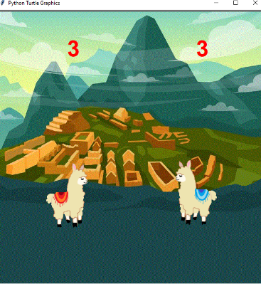
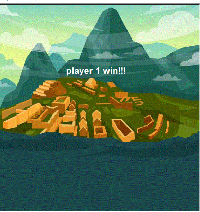

portfolio time!!

1.1.9 project!! Domo-kun Customizer
This project allowed user input to customize your own Domo Domo monster. The user is able to choose the color of Domo-kun and choose his cosmetics, such as choosing between 3 different hat options and glasses.
1.2.5 project!!! Llama Spitball

This game was based on arcade-style games and pong. Llama spitball requires two players, who can move up, down, left, right, and fire a spitball, to spit at each other until one of the players runs out of hearts. We used functions to define how collisions would be detected and to update the number of lives left, saving us from repetitive code.
scratch project!!! Journey of The Bird
<
We made a platform-style game where you helped a bird find its way back home! Collect worms on your way back and don't forget to avoid the spikes :)
2.1.6 project!! A pHishy Fish Tank Project
We identified and fixed all the errors in the fish tank monitoring algorithm. Furthermore, we identified all possible security vulnerabilities that could have lead to a system breach.
4.1.4 project!! Honeycomb Simulation
My partner and I decided to study a simulation of honeybees producing honeycomb. We analyzed what the simulation represents, what the turtle components in the simulation represents, how randomness is used, inclusions and exclusions in the model, proposed changes, some interesting questions about the real-world system, our conclusion, and some real-life issues that applies to the model we studied.